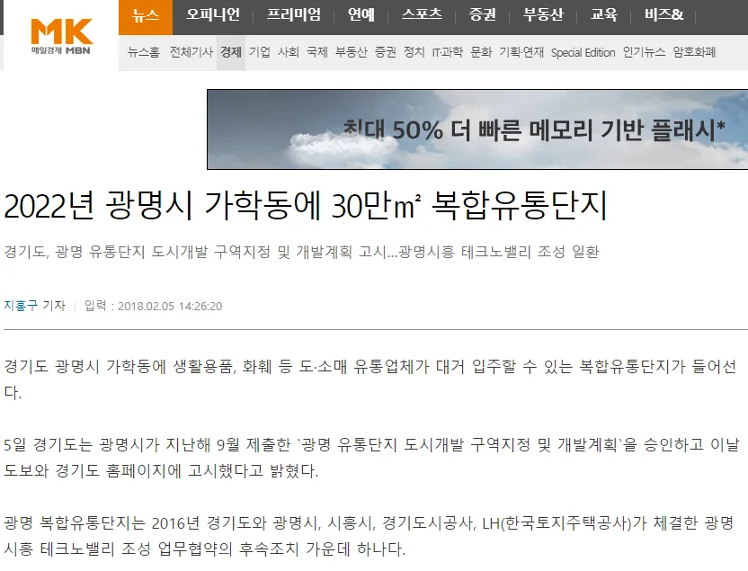
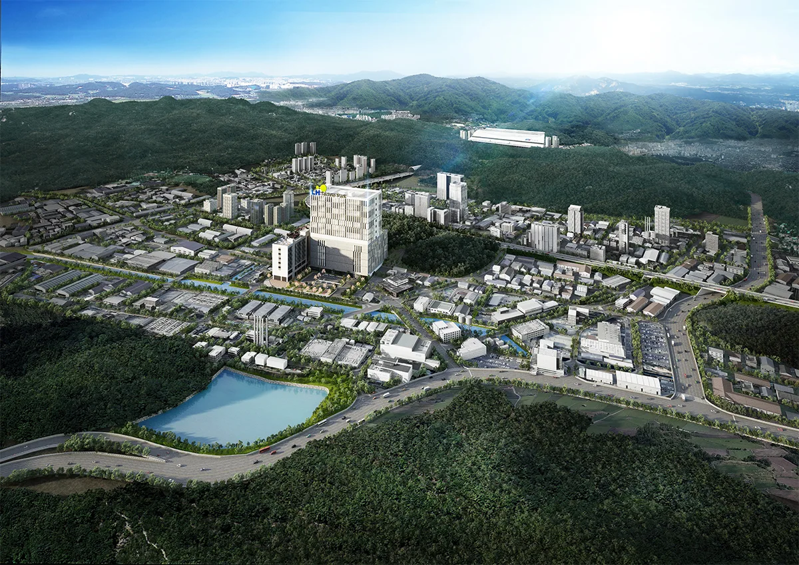
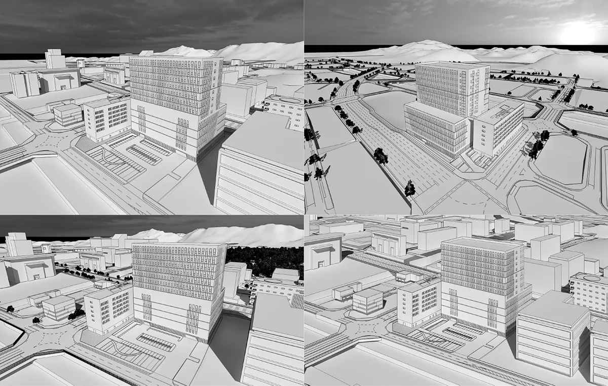
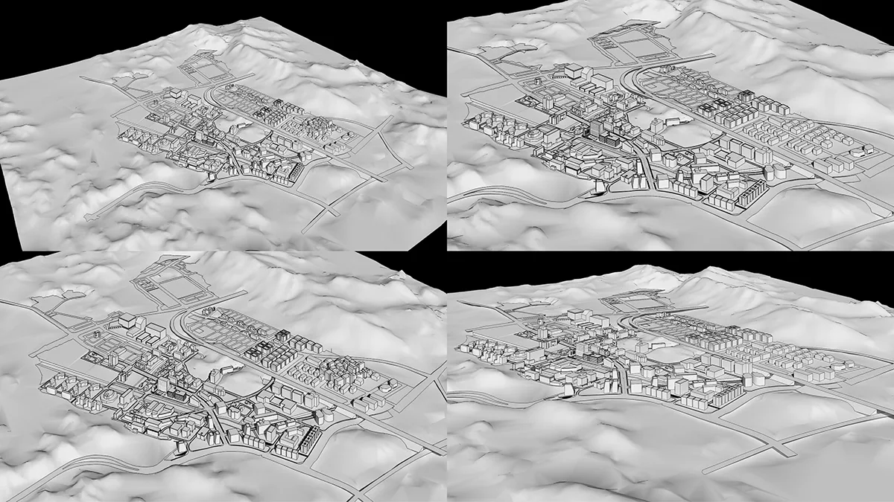
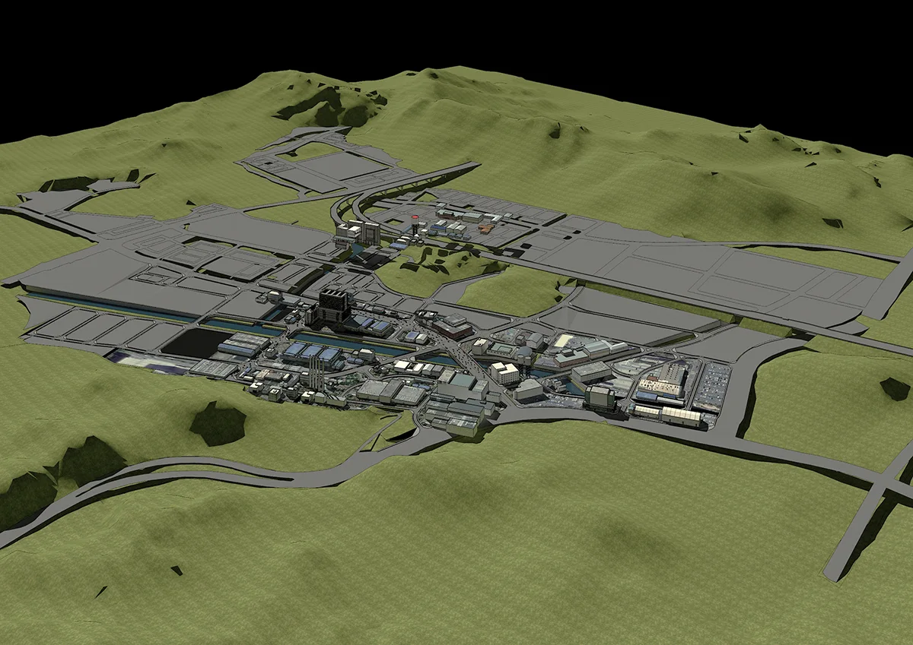
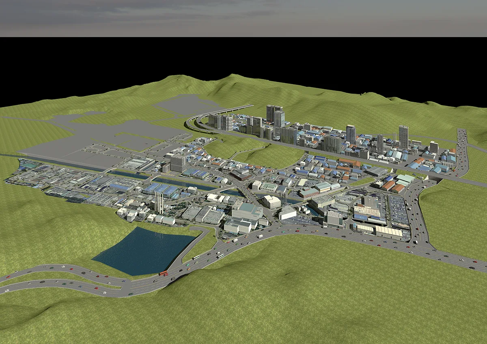
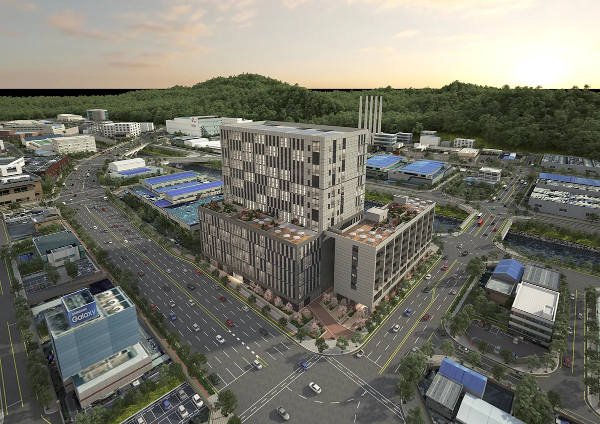
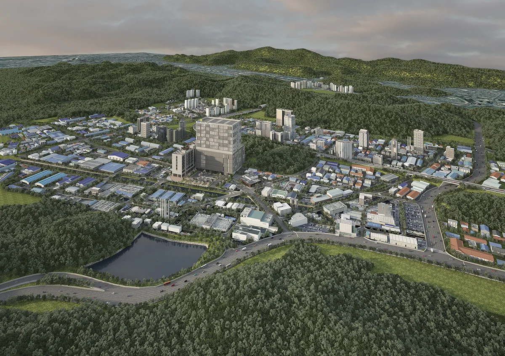

프로젝트 소개


이번에 메이크 그룹은 광명 복합 유통단지를 조성하고 있는 LH의 건축 기획 및 조감도 제작을 담당하여 진행하게 되었습니다.
2018년 11월 26일에 문의 주셨던 경기도 광명시 가학동 727 일대 광역도와 조감도에 대한 소개와 작업 중간 과정 및 결과물 입니다.

카메라 앵글 선정 이미지


본격적인 모델링 작업에 들어가기 전, 대략적인 모델링으로 어떤 앵글의 조감도와 광역도를 제작할 지 정하고 제작하는 것이 유리합니다. 차후에 카메라 앵글을 변경하는 것이 기술적으로 매우 어렵기 때문입니다
중간과정
모델링 과정입니다.

중심부 부터 도시의 외부 방향으로 전체적인 표현해 나갑니다. 아직 개발이 이루어진 지역이 아니라서 드론 및 항공 사진에 의존하기 보단 새롭게 만들어 내는것이 훨씬 예쁘게 제작할 수 있습니다.

어느정도 도시가 모델링 된 이후 주제 건물의 스케일감과 카메라 앵글에 대한 내용들을 정리하여 확정하게 됩니다. 작업은 계속 진행중인 상황입니다.

조감도 역시 마찬가지입니다. 이번 프로젝트의 조감도의 경우 카메라 앵글 선정 이후 큰 피드백 없이 저희가 알아서 주변 모델링 및 건축물 완성도를 올려 진행하여 중간과정 완성도가 높게 나온 경향이 있습니다.
최종 완성 단계

주변 공장 및 도심의 표현이 어느정도 이루어지고 배경은 합성으로 진행하기로 합의가 된 중간 과정입니다.
이후에 건물의 크기나 간판 후반부 도시 광명역 등 주요 표현에 대한 피드백을 주셨고 최종 완성하게 됩니다.